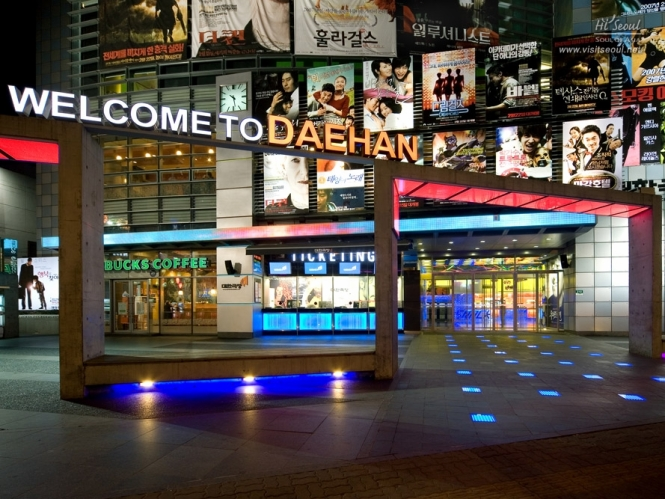
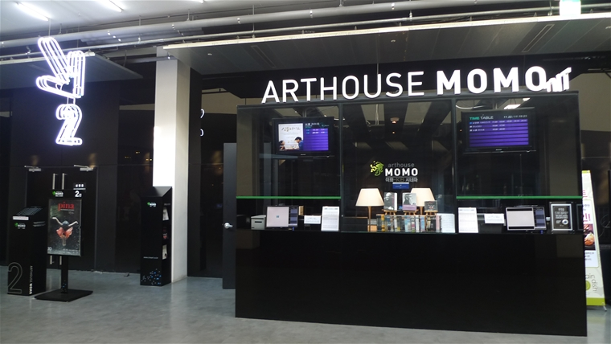
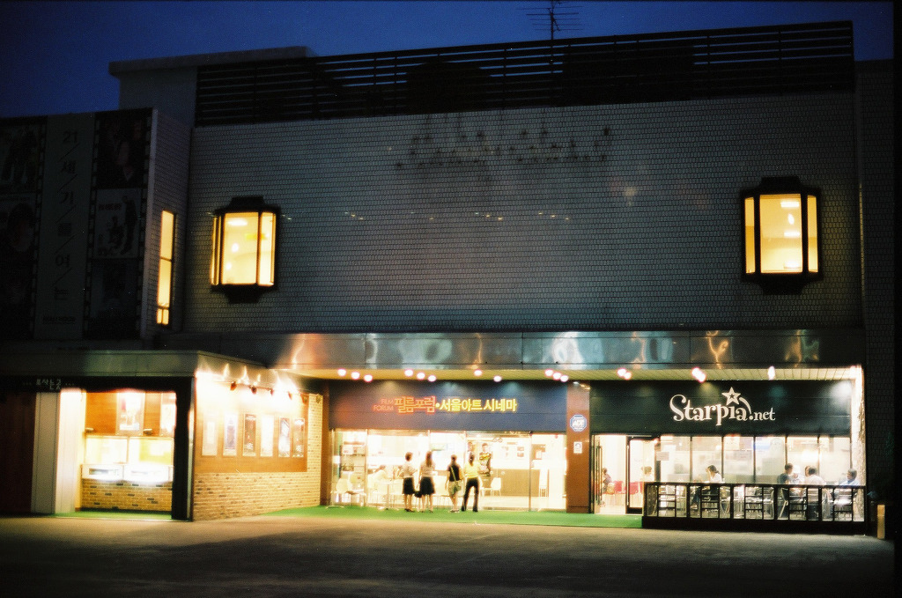
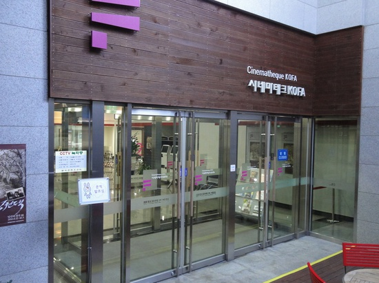
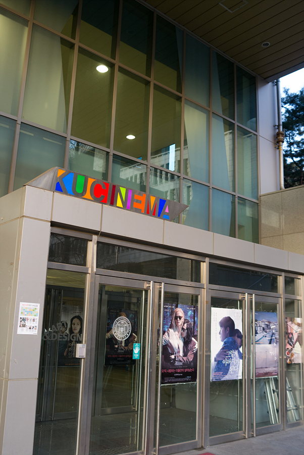
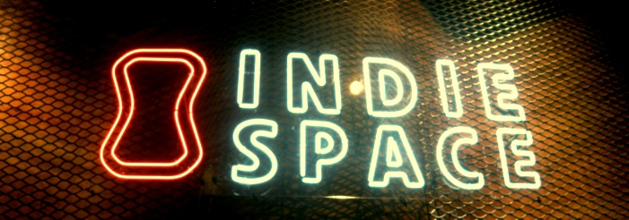
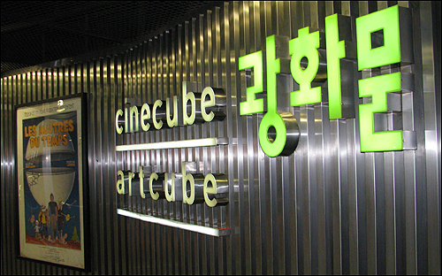
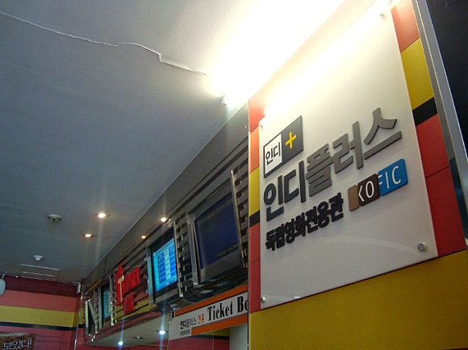

서울특별시 중구 퇴계로 212에 소재한 멀티플렉스 극장입니다. 충무로역 1번 출구로 나가다보면 극장 입구가 있습니다.
10관 11관이 굉장히 큰데 상영관만 넓지 스크린은 작습니다. 소리도 앞에만 집중된다는 단점이 있습니다.
2001년 전까지 대한극장은 국내 유일 70mm 필름 상영관을 보유했는데 멀티플렉스로 전환하면서 없어졌습니다.
CGV에 밀려 대한극장의 위용은 역사의 뒤안길로 사라집니다.

서울특별시 서대문구 이화여대길 52에 소재한 예술영화 전용 극장입니다. 이화여대 안 ECC관 B402에 위치해있습니다.
물을 제외한 마실 것은 반입이 금지되며 영화상영 10분 전부터 입실이 가능하고 상영 시작 후에는 입실이 불가능합니다.
가끔 이대랑 연계해서 영화이론 강의를 하기도 합니다.

서울특별시 종로구 돈화문로 13에 소재한 예술영화 전용 극장입니다. 서울극장 3층에 위치해있습니다.
일반 극장이랑 같이 있어서 사람들이 헷갈려 하는데 매표소가 따로 있고 영화 상영 시작 후에는 입장이 불가합니다.

서울특별시 마포구 월드컵북로54길 12에 소재한 예술영화 전용 극장입니다.
한국영상자료원과 이어져 있습니다. 극장은 지하 1층으로 가야 있고, 상영관 앞에 카페가 있는데
상영 30분 전에는 카페가 문을 닫습니다. 정시 상영을 목적으로 합니다.

서울특별시 광진구 능동로 120 건국대학교 예술문화관 B108에 소재한 예술영화 전용 극장입니다.

서울특별시 종로구 돈화문로 13에 소재한 독립영화 전용 극장입니다.

서울특별시 종로구 새문안로 68 흥국생명빌딩 지하 2층에 소재한 예술영화 전용 극장입니다.

서울특별시 강남구 도산대로8길 8 롯데시네마 브로드웨이에 소재한 독립영화 전용 극장입니다.